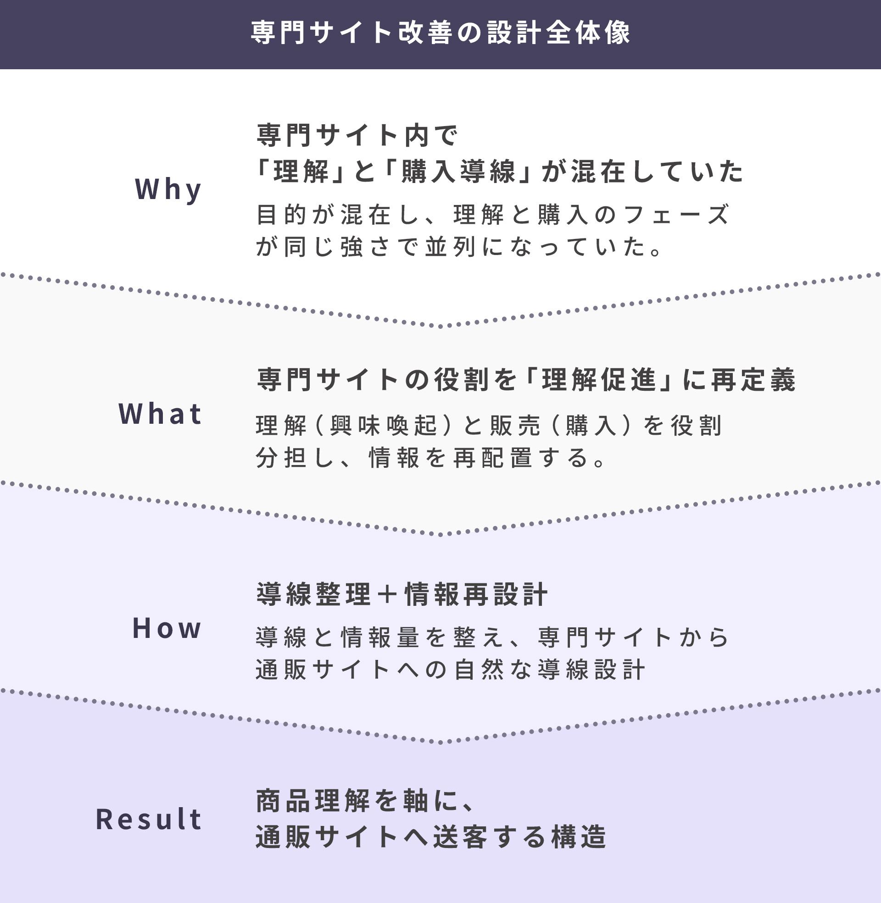
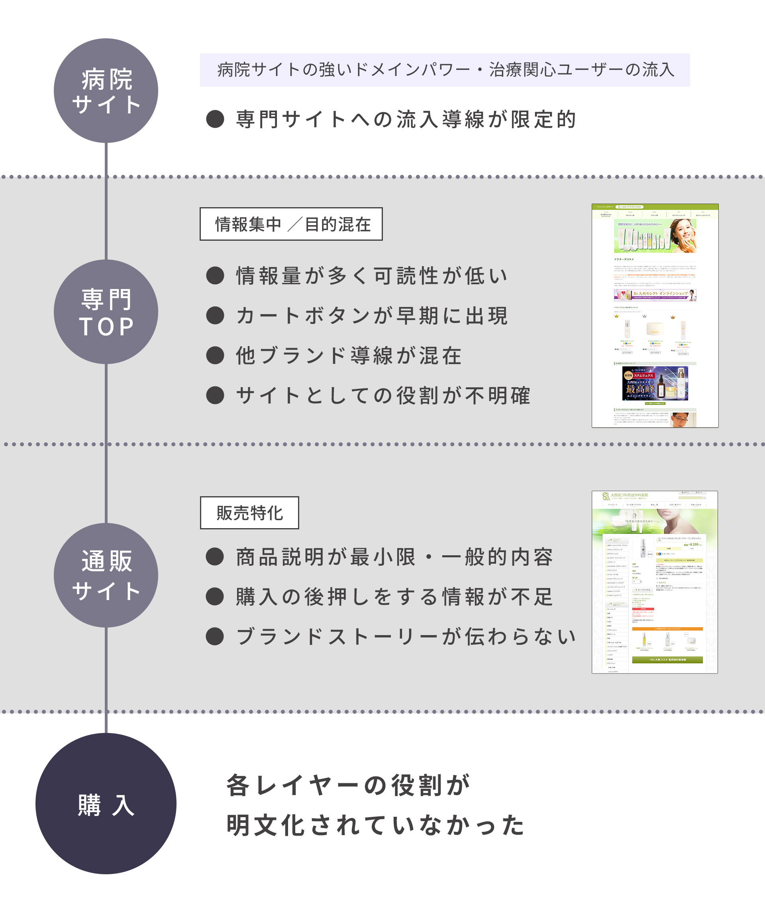
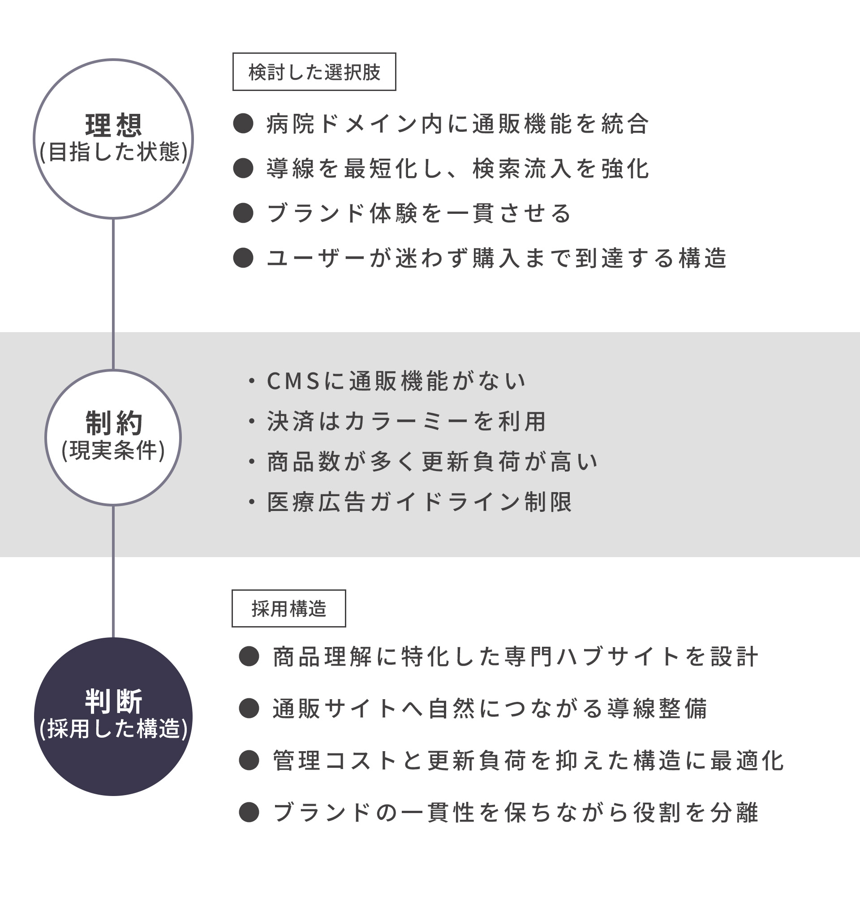
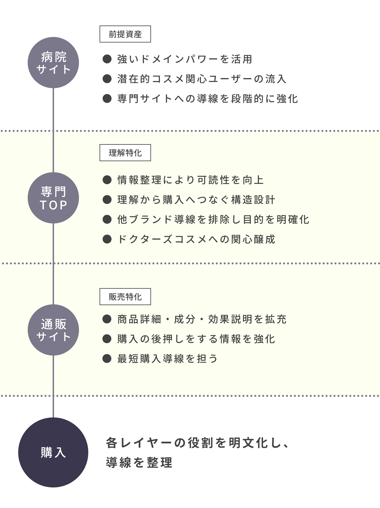
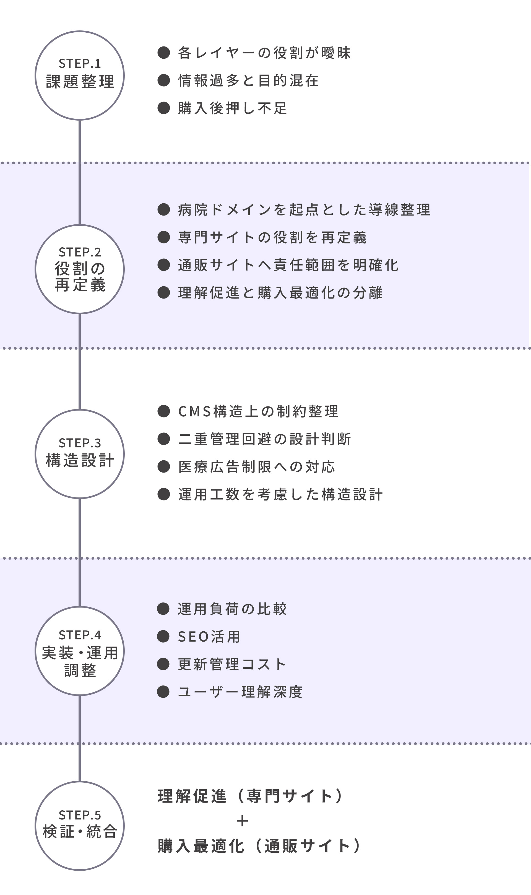

UX Design Detail
UX設計の詳細
ドクターズコスメ専門サイト改修
2年前に制作したドクターズコスメ専門サイトを、サイト全体の役割と構造を見直す目的で再設計しました。
既存サイトは情報量が豊富な一方で、初見ユーザーにとって「何を理解し、次に何をすればよいか」が掴みにくい状態でした。
本改修では、情報を増やすのではなく「ページの目的を一本化する」ことを軸に、理解促進と導線整理の再構築を行いました。
How to Read
このページは、専門サイト改修における「課題整理 → 再定義 → 設計 → 検証」を、図と文章で整理した補足資料です。
※現在、修正作業は順次対応している段階です。全ての内容が反映されているわけではありませんが、構造設計の考え方や判断の根拠は変わらないため、現状の内容でまとめています。
01 概要
- 対象
- ドクターズコスメという名称は知っているが、特徴や選び方までは理解していないユーザー。来院経験があり、存在は認知しているものの、積極的に調べたり購入を検討している段階ではない層を想定
- 目的
- 商品理解を促進し、専門サイトから通販サイトへの導線を整える
- KPI
- ・専門サイトへの流入
・専門サイトから通販サイトへの遷移率
補足：本サイトの役割は「理解促進と導入」であり、購入率の最適化は通販サイト側での施策と連動する設計としています。

02 改善前の状態
既存の専門サイトは、TOPページを中心に、説明・ランキング・ラインアップなど多くの情報が並列に配置されていました。
商品一覧ページでは成分説明と商品説明が長く連続し、情報量が多い構造となっており、各ページにおいても役割が明確に整理されていない状態でした。
その結果、専門サイト全体として「理解」と「購入導線」の位置づけが曖昧になっていました。
そのため、サイト全体の構造を見直し、各ページの役割を再定義する必要があると判断しました。

03 意思決定
既存サイトは「病院ドメインで運営する専門サイト」という前提があり、CMSによる構造制約や、決済・受注管理は通販サイト側が担う分業体制となっていました。
そのため、専門サイト単体で購入最適化までを担うのではなく、役割を整理し直す必要があると判断しました。
検討の結果、専門サイトの役割を「理解促進と導入」に再定義し、購入最適化は通販サイト側で担う構造とする方針としました。
そのうえで、各ページの役割を整理し、情報の優先順位を見直すことを改善の軸としました。ページ単体の改善ではなく、サイト全体の構造整理として再設計を行いました。

04 改善後の構造
病院サイトから専門サイトへの流入を起点に、専門サイト内での理解促進を軸とした構造へ再設計しました。
専門サイトでは「ドクターズコスメだけ」に集中できる情報設計で理解を促進し、通販サイトの商品詳細で購入の後押しを強化する構造へ整理しました。
具体的には、TOP上で完結させようとしていた情報を整理し、理解に必要な要素を残しつつ、詳細説明は下層へ逃がすことで「読む負担」を下げました。
さらに、専門サイト全体の構造を再整理し、各ページが担う役割を明確に再定義しました。
- TOP
- 理解促進の入口
- 商品一覧
- 比較と送客を担う設計
- 誕生秘話
- ブランド信頼を形成する役割
- ドクターズコスメ
- 基礎理解の集約するページ
- カテゴリ
- 役割重複の解消のため整理
- ブランド
- 専門サイトの目的と不一致のため整理

05 思考プロセス（STEPで追体験）
課題整理 → 再定義 → 設計 → 実装検証の順に進め、構造的に見直しを行いました。
- STEP1 課題整理
- 専門サイトは、病院サイトのドメインを活用して新規ユーザーを獲得する「ハブ（＝接続サイト）」として機能すべきだと再定義しました。 そのうえで、購入導線が先行している状態を構造的なミスマッチと判断しました。
- STEP2 役割の再定義
- 専門サイトを「理解促進」、通販サイトを「購入最適化」と役割分担しました。
各レイヤーの責任範囲を明確に整理しました。 - STEP3 構造設計
- 各セクションの情報量を見直し、ページごとに取らせたい行動を明確にしました。
- STEP4 UI調整
- UIの可読性や押下性だけでなく、運用負荷や更新管理のしやすさも踏まえて調整しました。
体験と運用の両立を意識し、実装可能な設計へ落とし込みました。 - STEP5 検証・整合
- 専門サイト内で理解が完結しすぎない構造とし、通販サイトへ自然に引き渡す導線へ整えました。
